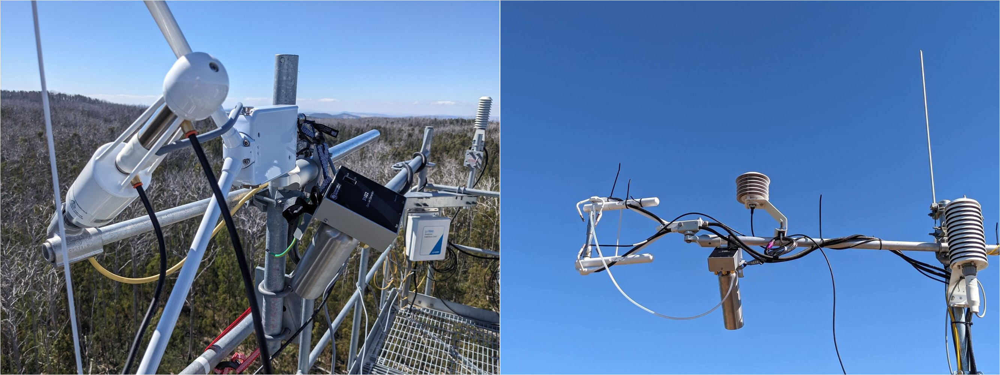

Sensor calibration
Of major EC-related instruments
Anemometer
Usually no DIY calibration possible. Can check the zero by covering the anemometer (plastic bag or similar) in a wind-still room. Regular cleaning required! The wicks can disintegrate and can sometimes block the pathway.
IRGA
General:
ICOS protocol: From Sabbatini and Papale (2017) : ICOS require an IRGA to be calibrated twice per year, four times per year if the instrument is new. It is preferred to calibrate the IRGA in the field to minimise downtime. Otherwise, a replacement IRGA must be installed to avoid gaps in the data while the actual IRGA is away for calibration. The zero of H2O and CO2 signals must be checked regularly between the calibrations. The recommended frequency is every two months. In the field, the sensor is not cleaned initially before checking the zero. Thresholds of zero “drifts shall be based on CO2 concentration because more stable (drifts >30 μmol mol-1 CO2 are considered significant). As an indication, also H2O drifts > 1.5 mmol mol-1 are considered significant.” Factory calibrations of the IRGA is required every second year!
World Meteorological Organistation guidelines
See their strict guide on “the Observations of CO2, CH4 and N2O at Global Atmosphere Watch Stations”: World Meteorological Organization (WMO) (2025)any Irga calibration papers?
Licor 7500xxx
- requires Li7500-specific shroud
- chemicals get changed before each calibration. It takes 24 hours to flush the system once the chemicals are changed. Only then the actual calibration can take place.
Campbell Scientific Irgason
- requires Irgason-specific shroud
- Chemicals need changing every two years or when drift occurs. Similar to the Licor IRGAs, the system needs to be flushed with the new chemicals for 24 hours before the calibration can happen.
Checking CO2 and H2O zero in the field
Campbell Scientific provide a handheld tool that allows to check the zeros of H2O and CO2 in the field. The tools uses scrubber chemicals to produce “zero” air, ie air without CO2 or H2O. It has a built-in, battery powered pump that circulates the “zero” air through the calibration shroud that is installed in the optical path of the irga (either Licor 7500xx or Campbell Scientific Irgason). A tube connects the “out” port of the Zero Air Generator with the shroud. Air is circulated through the shroud using the battery-powered pump of the device.
To check/set the zero, the temperature sensor of the shroud is connected to the control unit of the IRGA to estimate the dew point. The irga must be turned off before connecting/disconnecting the temperature sensors. The instrument-specific software by the manufacturer (ECmon or Licor75xx) is used to check and potentially set the zero once the system is flushed with “zero” air, and the values are stable (allow 10 min to 20 min). See their instruction manuals for details.This allows a relatively fast, hassle free check of the zero that can be done on location on the tower. A laptop with the instrument control software and USB cable (instrument-specific, in the case of Licor7500a/RS) or serial cable (with specific board adapter in case of Licor 7500) are required.

Using the Campbell Scientific Zero Air Generator on location to check CO2 and H2O zeros of the IRGA. Left: Licor 7500 RS. Right: Campbell Scientific IRGASon (Markus Loew)
Campbell Scientific logger calibration?
- every few years at manufacturer - who does actually do that? What’s the logger drift?